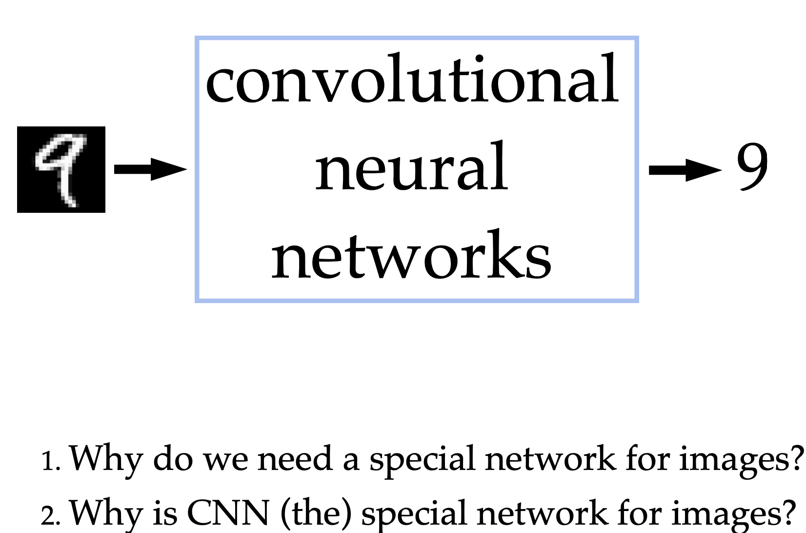
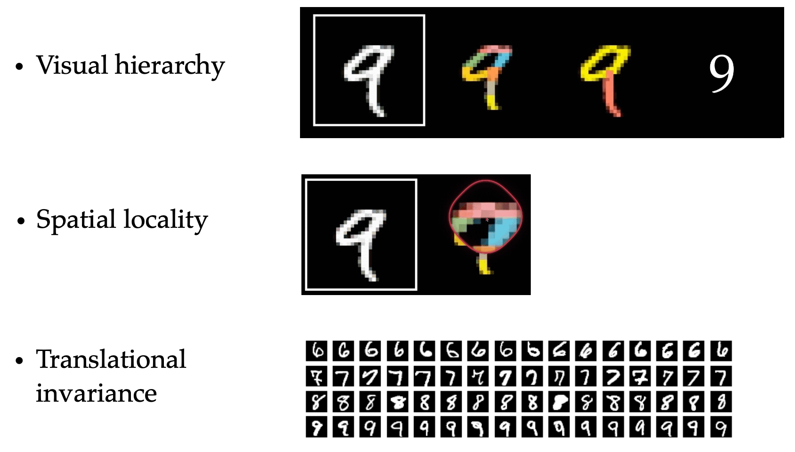
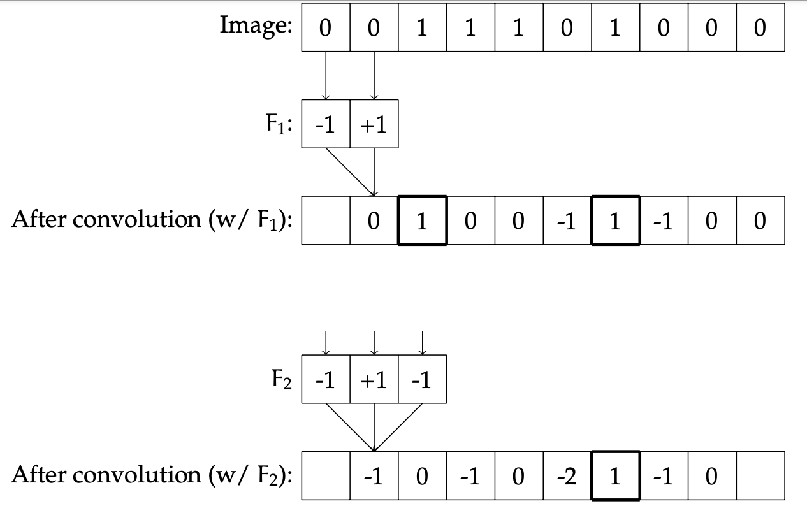
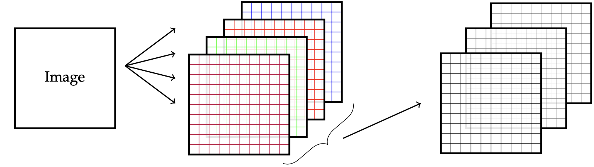
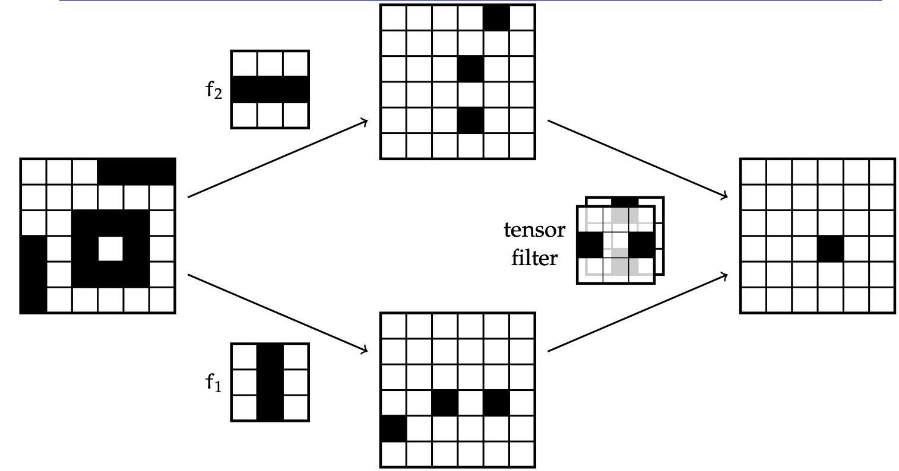
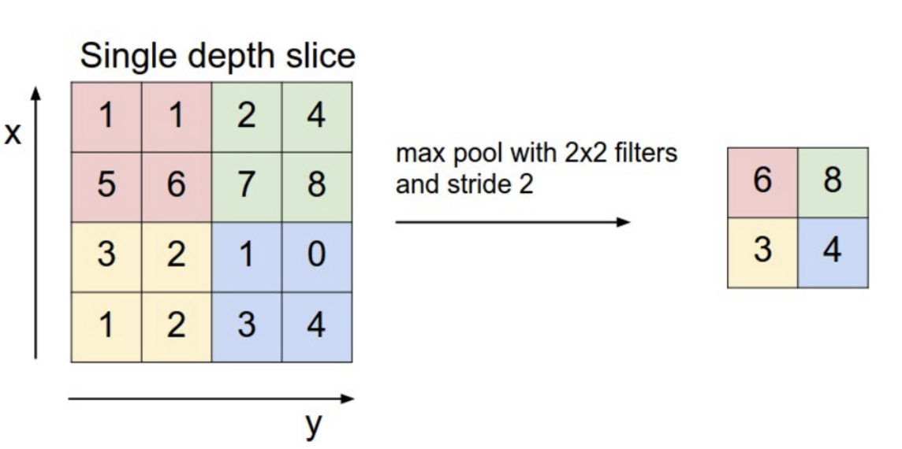
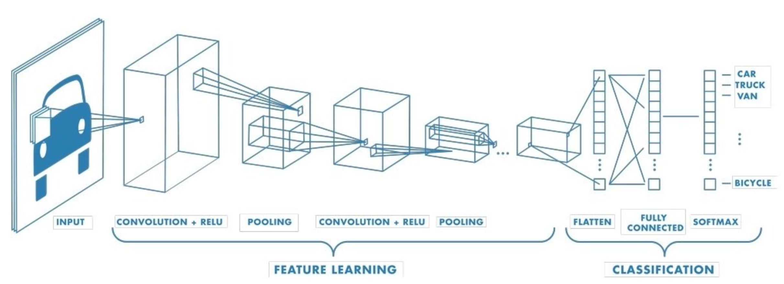
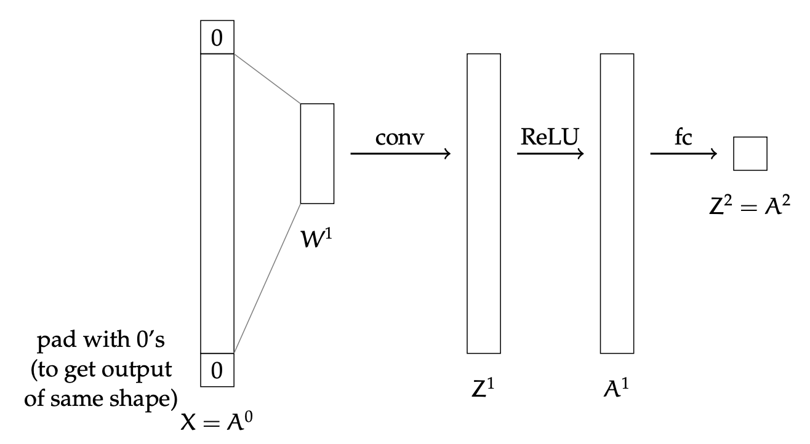
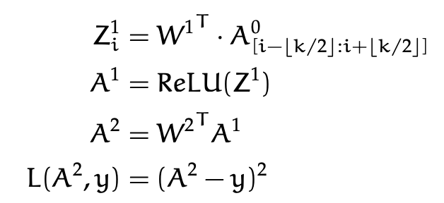
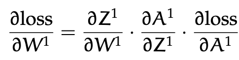

A deep learning model specialized for grid‑like data (e.g., images)
Automatically learns hierarchical spatial features
State‑of‑the‑art in computer vision tasks
Why CNN?

Why CNN?
Fully-connected nets don’t scale well to (interesting) images. Imagine an image 426 x 426 with a single layer (output size = # of classes, i.e. classes):
Parameters = 426 x 426 x 10 = 1.9 million
Image as a signal with spatial dependency:
Image: Two dimensional signal - set of values related to one another in systematic way (Stochastic process).
Other examples of signals: Speech/music - One dimensional signals
Why CNN?

Why CNN?
Visual Hierarchy: layering
Spatial locality: Convolution
Translational Invariance: Pooling
Filters: Convolution
An image filter is a function that takes in a local spatial neighborhood of pixel values and detects the presence of some pattern in that data.
Let \(X\) be the original image, of size \(d\); then pixel \(i\) of the output image is specified by:
\[
Y_i = F \cdot (X_{i-1}, X_i)
\] This process of applying the filter to the image to create a new image is called convolution.
Filters: Convolution

Multiple Filters: Detect different features in one layer

If there are \(m\) filters applied to the original image, the size of the output is \(m\) images ( \(m\) channels).
Example: Layering convolutions

Convolutional Layer Parameters
Number of filters: \(m_l\)
Size of one filter: \(k_l \times k_l \times m_{l-1} + 1 \text{ (for the bias value for this one filter).}\)
Stride \(s_l\): The stride determines the spacing at which the filter is applied to the image.
Padding \(p_l\): Refers to the number of extra pixels (typically with value \(0\)) added around the edges of the input.
Max-Pooling
Max-pooling is a simple yet powerful operation in CNNs:
Reduces computational complexity.
Enhances translational invariance.
Emphasizes prominent features.
Improves generalization by reducing overfitting.
Max-pooling

Set stride \(s^l\)
Set size \(k^l \times k^l\) (\(k^l \geq s^l\)).
Typical Architecture
Here is the form of a typical convolutional network:

Typical Architecture
Initial layers: Feature extraction.
After each filter layer there is generally a ReLU layer; there maybe be multiple filter/ReLU layers and max-pooling layers.
Final layers: Clasification/Regression
Once the output is down to a relatively small size, there is typically a last fully connected layer, leading into an activation function such as softmax that produces the final output.
Back-propagation: A simple example

Back-propagation: A simple example


TensorFlow Demo: MNIST - Building the model
Code
import tensorflow as tffrom keras import layers, models####Load and preprocess MNIST data(x_train, y_train), (x_test, y_test) = tf.keras.datasets.mnist.load_data()x_train = x_train[..., tf.newaxis] /255.0x_test = x_test[..., tf.newaxis] /255.0## Define model architecturemodel = models.Sequential([ tf.keras.Input(shape=(28, 28, 1)), ##input are 28x28images, single layer layers.Conv2D(32, 3, activation='relu'), # kernel size=3, channels or filters: 32, stride=1, padding=none layers.MaxPooling2D(), layers.Flatten(), layers.Dense(64, activation='relu'), layers.Dense(10, activation='softmax')])